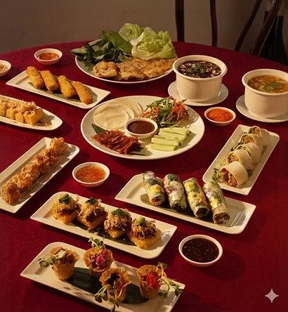
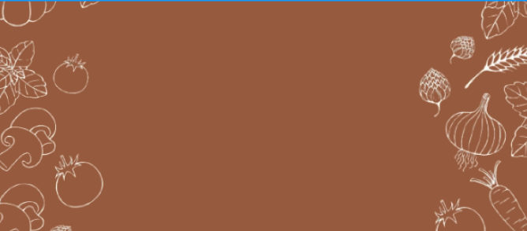

Giữa nhịp sống hối hả và nhộn nhịp, Ngon Lành lặng lẽ giữ cho mình một nếp sống chay đầy tinh tế và thâm trầm. Chúng tôi tin rằng, mỗi bữa ăn là một dịp để trở về – trở về với sự nhẹ nhàng trong tâm, sự tròn đầy trong vị, và sự ấm áp nơi bàn ăn sum họp gia đình.
Từ cảm hứng ẩm thực truyền thống đến cách chế biến hiện đại, thực đơn tại Ngon Lành là sự hòa quyện giữa hương vị đậm đà – khẩu phần tinh tế – và cải tiến giữ trọn nguyên liệu sạch. Mỗi món ăn không chỉ ngon miệng mà còn chứa đựng tâm ý của người đầu bếp, mang lại sự an nhiên và sức khỏe bền vững cho thực khách.
